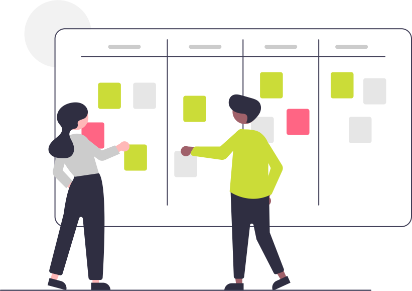

Accueil
 Ce site s'adresse aux secondes 2GT4 du lycée Notre Dame du Mur de MORLAIX pour l'enseignement des Sciences Numériques et Technologie.
Ce site s'adresse aux secondes 2GT4 du lycée Notre Dame du Mur de MORLAIX pour l'enseignement des Sciences Numériques et Technologie.

Programme⚓︎
Le programme de SNT est articulé autour de sept thèmes:

Les données constituent la matière première de toute activité numérique. Afin de permettre leur réutilisation, il est nécessaire de les conserver de manière persistante. Les structurer correctement garantit que l’on puisse les exploiter facilement pour produire de l’information.
Comment traiter ces données ?

Les technologies de la photographie argentique ont eu une évolution très lente, liée aux progrès en optique, mécanique et chimie. Ce n’est plus du tout le cas de l’évolution actuelle, davantage due aux algorithmes qu’à la physique : algorithmes de développement et d’amélioration de l’image brute, algorithmes d’aide à la prise de vue. La photographie numérique présente un coût marginal très faible et une diffusion par internet facile et immédiate : chaque jour, des milliards de photos sont prises et partagées.
Comment sont représentées ces images sur un ordinateur et comment les traiter pour les modifier ?

Grâce à sa souplesse et à son universalité, Internet est devenu le moyen de communication principal entre les hommes et avec les machines.
Quels sont les techniques et protocoles qui permettent la circulation des informations sur ce réseau mondial ?

Le Web (toile) désigne un système donnant accès à un ensemble de données (page, image, son, vidéo) reliées par des liens hypertextes et accessibles sur le réseau Internet.
Comment sont construites les pages Web et comment communiquer avec un serveur ?

Les réseaux sociaux sont des applications basées sur les technologies du Web qui offrent un service de mise en relation d’internautes pour ainsi développer des communautés d’intérêts.
Comment ces réseaux gèrent les données des utilisateurs et comment mettent-ils en place les services de recommandation/suggestion ?

La cartographie est essentielle pour beaucoup d’activités : agriculture, urbanisme, transports, loisirs, etc. Elle a été révolutionnée par l’arrivée des cartes numériques accessibles depuis les ordinateurs, tablettes et téléphones, bien plus souples à l’usage que les cartes papier.
Comment se repérer sur ces cartes et comment calculer un itinéraire ?
 Embarquer l’informatique dans les objets a beaucoup d’avantages : simplifier leur fonctionnement, leur donner plus de possibilités d’usage et de sûreté, et leur permettre d’intégrer de nouvelles possibilités à matériel constant par simple modification de leur logiciel.
Embarquer l’informatique dans les objets a beaucoup d’avantages : simplifier leur fonctionnement, leur donner plus de possibilités d’usage et de sûreté, et leur permettre d’intégrer de nouvelles possibilités à matériel constant par simple modification de leur logiciel.
Comment réaliser un programme simple à embarquer dans un objet ?
Progression envisagée :

-
Le thème de l'informatique embarquée et des objets connectés (IOT : internet of things) étant également abordé au cours de l'année par certains en enseignement de Sciences de l'Ingénieur, ils nous en présenteront une synthèse à la fin.
-
L'initiation à la programmation en Python et Internet seront traités transversalement aux autres thèmes au fil de l'eau.
Evolution de l’enseignement SNT :
Nous tâcherons de suivre la première recommandation d'évolution de l’enseignement SNT publiée en juin 2022 par le Conseil Supérieur des Programmes (CSP) et soutenue par la Société Informatique de France (SIF) qui consiste à faire évoluer le contenu de cet enseignement de seconde vers un enseignement d’informatique et numérique en lien direct avec les besoins de formation du citoyen et du scientifique du XXIe siècle.
"En effet, cet enseignement se doit de répondre à plusieurs enjeux essentiels et complémentaires : donner un socle de connaissances et compétences fondamentales nécessaire à tout citoyen du XXIe siècle, contribuer à construire le bagage des informaticiens en devenir, transmettre aux jeunes des premières clés scientifiques et techniques pour être en capacité d’inventer les futurs usages du numérique dans les nombreuses disciplines et métiers qu’il transforme, et enfin les éclairer dans leurs choix d’orientation."
"En particulier, cet enseignement devrait être l’occasion de montrer l’informatique dans sa diversité en transmettant des éléments essentiels issus des 4 piliers de cette science et technique : algorithmes, langages, données, machines. Le recours à des thèmes concrets proches des usages des jeunes pour illustrer les différents concepts mérite d’être conservé à condition d’être, cette fois, assujetti à de réelles ambitions en matière d’acquisition de compétences et connaissances fondamentales en informatique." (extraits du COMMUNIQUE DE LA SIF POUR UNE EVOLUTION DE L'ENSEIGNEMENT SNT)

Je tâcherai donc de vous accompagner, autant que possible, dans votre apprentissage de l'informatique, la "vrai" !
Cahier de texte⚓︎

A LIRE :
-
Travailler PYTHON en prépa ECG, LA LICENCE MIASHS Mathématiques et informatiques appliquées aux sciences humaines et sociales ;
-
ChatGPT : « Non, le métier de développeur informatique n’est pas mort !
-
Sortir de sa zone de confort pour apprendre afin de se réaliser ;
Le 06/06⚓︎
-
Finir tous les niveaux de Pyrates
- Bonnes vavances...
Le 30/05⚓︎
- Découvrir l'Intelligence Artificielle avec vittascience : entrainer une machine à reconnaitre des images
- Poursuivre les activités de découverte concernant la photographie numérique
Le 09/05⚓︎
- Evaluation par QCM sur les expériences de traitement de données ;
- Poursuivre les activités de découverte concernant la photographie numérique
- Poursuivre les activités de découverte concernant la photographie numérique
Le 02/05⚓︎
- Fin des interrogations orales sur les expériences de traitement de données ;
- Mesurer vos compétences dans le domaine des données structurées en suivant le parcours
XXMJHZ354sur PIX ; - Commencer les activités de découverte concernant la photographie numérique
- Se préparer pour une évaluation par QCM sur les expériences de traitement de données ;
Le 11/04⚓︎
- Intervention en visio d'une étudiante en école de commerce pour présenter sa pratique de la programmation Python pour réaliser des requètes dans des tables de données ;
- Interrogations orales sur la troisième partie des expériences de traitement de données ;
- Mesurer vos compétences dans le domaine des données structurées en suivant le parcours
XXMJHZ354sur PIX ;
- Finir les expériences de traitement de données ;
- Faire la mise à jour d'Obsidian pour découvrir les canvas ;
Le 04/04⚓︎
- Interrogations orales sur la première partie des expériences de traitement de données ;
- Mesurer vos compétences dans le domaine des données structurées en suivant le parcours
XXMJHZ354sur PIX ;
- Finir les expériences de traitement de données ;
- Faire la mise à jour d'Obsidian pour découvrir les canvas ;
Le 28/03⚓︎
-
Découvrir la représentation binaire des données ;
-
Poursuivre les expériences de traitement de données ;
Les 07 et 14/03⚓︎
-
Découvrir la manipulation de données sur la plateforme France-IOI avec les codes :
7vi35usapour l'activité n°1 ;hk3ugguxpour l'activité n°2 ;wvs3ewgcpour l'activité n°3 ;
-
Correction du contrôle commun ;
Le 28/02⚓︎
-
Participer aux activités d'escape game pour l'accueil des troisièmes ;
-
Découvrir la manipulation de données sur la plateforme France-IOI avec les codes :
7vi35usapour l'activité n°1 ;hk3ugguxpour l'activité n°2 ;wvs3ewgcpour l'activité n°3 ;
Le 07/02⚓︎
-
Finalisation du thème les réseaux sociaux :
- Finaliser vos recherches concernant le réseau social tiré au sort dans la liste en résumant les données collectées dans une
note.mdd'Obsidian : Vérifier l'ensemble des items à traiter ; - Préparer un diaporama dans Obsidian support de votre présentation orale et produire une vidéo partagée sur Stream d'Office365...
- Mesurer vos compétences dans le domaine des réseaux sociaux en suivant le parcours
ZRSJAG289sur PIX ; - => Transmettre par mail un lien vers votre vidéo partagée sur Stream dans Office365 et un dossier archive (compressé, zip) contenant votre
note.md, votrediaporama.md, tous les fichiers d'images et d'autres éléments intégrés...) ; - Discuter de potentielles dérives ;
- Réviser en prévision d'une évaluation....
- Finaliser vos recherches concernant le réseau social tiré au sort dans la liste en résumant les données collectées dans une
-
Programmation en Python avec https://py-rates.fr/ et https://e-nsi.forge.aeif.fr/init_python/ ;
- Lire le chapitre concernant les réseaux sociaux sur www.lelivrescolaire.fr ;
- Explorer les fonctionnalités du logiciel Obsidian pour améliorer votre diaporama ;
- Finir tous les niveaux de https://py-rates.fr/
- S'entrainer à Algoréa
Le 07/02⚓︎
- Projection de Film et Culture
Le 24/01⚓︎
-
Poursuite du thème les réseaux sociaux :
- Finaliser vos recherches concernant le réseau social tiré au sort dans la liste en résumant les données collectées dans une
note.mdd'Obsidian : Vérifier l'ensemble des items à traiter ; - Préparer un diaporama dans Obsidian support de votre présentation orale et produire une vidéo partagée sur Stream d'Office365...
- Mesurer vos compétences dans le domaine des réseaux sociaux en suivant le parcours
ZRSJAG289sur PIX ; - => Transmettre par mail un dossier archive (compressé, zip) contenant votre
note.md, votrediaporama.md, tous les fichiers d'images et d'autres éléments intégrés...) ; - Découvrir les notions de graphe et petit monde ;
- Finaliser vos recherches concernant le réseau social tiré au sort dans la liste en résumant les données collectées dans une
-
Synthèse programmation en Python de https://py-rates.fr/ ;
- Lire le chapitre concernant les réseaux sociaux sur www.lelivrescolaire.fr ;
- Explorer les fonctionnalités du logiciel Obsidian pour améliorer votre diaporama ;
- Finir tous les niveaux de https://py-rates.fr/
- S'entrainer à Algoréa
Le 17/01⚓︎
-
Poursuite du thème les réseaux sociaux :
- Finaliser vos recherches concernant le réseau social tiré au sort dans la liste en résumant les données collectées dans une
note.mdd'Obsidian : Vérifier l'ensemble des items à traiter ; - Préparer un diaporama dans Obsidian support de votre présentation orale et produire une vidéo partagée sur Stream d'Office365...
- Mesurer vos compétences dans le domaine des réseaux sociaux en suivant le parcours
ZRSJAG289sur PIX ; - => Transmettre par mail un dossier archive (compressé, zip) contenant votre
note.md, votrediaporama.md, tous les fichiers d'images et d'autres éléments intégrés...) ;
- Finaliser vos recherches concernant le réseau social tiré au sort dans la liste en résumant les données collectées dans une
-
Synthèse programmation en Python de https://py-rates.fr/ ;
- Lire le chapitre concernant les réseaux sociaux sur www.lelivrescolaire.fr ;
- Explorer les fonctionnalités du logiciel Obsidian pour améliorer votre diaporama ;
- Finir tous les niveaux de https://py-rates.fr/
- S'entrainer à Algoréa
Le 10/01⚓︎
-
Poursuite du thème les réseaux sociaux :
- Finaliser vos recherches concernant le réseau social tiré au sort dans la liste en résumant les données collectées dans une note d'Obsidian : Vérifier l'ensemble des items à traiter ;
- Préparer un diaporama dans Obsidian support de votre présentation orale et produire une vidéo partagée sur Stream d'Office365...
- Mesurer vos compétences dans le domaine des réseaux sociaux en suivant le parcours
ZRSJAG289sur PIX ;
- Lire le chapitre concernant les réseaux sociaux sur www.lelivrescolaire.fr ;
- Explorer les fonctionnalités du logiciel Obsidian pour améliorer votre diaporama ;
- Finir tous les niveaux de https://py-rates.fr/
- S'entrainer à Algoréa
Le 13/12⚓︎
-
Remédiation technique sur les envois par mail des fichiers
note.mdavec images en PJ ; -
Poursuite du thème les réseaux sociaux :
- Finaliser vos recherches concernant le réseau social tiré au sort dans la liste en résumant les données collectées dans une note d'Obsidian ;
- Préparer un diaporama dans Obsidian support de votre présentation orale et le publier sur le web via GitHub...
- Lire le chapitre concernant les réseaux sociaux sur www.lelivrescolaire.fr ;
- Explorer les fonctionnalités du logiciel Obsidian pour améliorer votre diaporama ;
- Finir tous les niveaux de https://py-rates.fr/
- S'entrainer à Algoréa
Le 06/12⚓︎
-
Découverte du logiciel Obsidian -> récupération dans un coffre d'iCloud du fichier MarkDown de la liste de réseaux sociaux mise à jour ;
-
Poursuite du thème les réseaux sociaux -> Faire des recherches concernant le réseau social tiré au sort dans la liste et les résumer dans une note d'Obsidian ;
- Lire le chapitre concernant les réseaux sociaux sur www.lelivrescolaire.fr ;
- Explorer les fonctionnalités du logiciel Obsidian ;
Le 29/11⚓︎
-
Synthèse du thème Web et bilan du trimestre ;
-
Initiation du thème les réseaux sociaux -> rédaction collective en MarkDown d'une liste de réseaux sociaux ;
-
Découverte du logiciel Obsidian -> récupération dans un coffre d'iCloud du fichier MarkDown de la liste de réseaux sociaux établie ;
- Lire le chapitre concernant les réseaux sociaux sur www.lelivrescolaire.fr ;
- Explorer les fonctionnalités du logiciel Obsidian ;
Le 22/11⚓︎
-
Evaluation finale du thème Web par QCM ;
-
Partager par mail l'URL de votre site web publier depuis GitHub -> Résoudre toutes les difficultés techniques restantes... ;
-
A partir des sujets à aborder en projet Web, par équipe, développer chacun un site contenant le même contenu mais présenté dans des styles différents et avec des liens renvoyant vers un des autres sites de l'équipe ;
Entres autres, utiliser la ressource www.lelivrescolaire.fr.
- Poursuivre votre initiation aux langages HTML/CSS pour faire une page web ;
- Poursuivre votre initiation aux langages HTML/CSS pour faire une page web ;
- Finir votre projet Web ;
Les 08 et 15/11⚓︎
-
Partager par mail l'URL de votre site web publier depuis GitHub -> Résoudre toutes les difficultés techniques restantes... ;
-
A partir des sujets à aborder en projet Web, par équipe, développer chacun un site contenant le même contenu mais présenté dans des styles différents et avec des liens renvoyant vers un des autres sites de l'équipe ;
Entres autres, utiliser la ressource www.lelivrescolaire.fr.
- Poursuivre votre initiation aux langages HTML/CSS pour faire une page web ;
- Poursuivre votre initiation aux langages HTML/CSS pour faire une page web ;
- Développer votre projet Web ;
Le 18/10⚓︎
-
Partager par mail l'URL de votre site web publier depuis GitHub -> Résoudre toutes les difficultés techniques restantes... ;
-
A partir des sujets à aborder en projet Web, par équipe, développer chacun un site contenant le même contenu mais présenté dans des styles différents et avec des liens renvoyant vers un des autres sites de l'équipe ;
-
Poursuivre votre initiation aux langages HTML/CSS pour faire une page web ;
- Poursuivre votre initiation aux langages HTML/CSS pour faire une page web ;
- Développer votre projet Web ;
Le 11/10⚓︎
-
Partager par mail l'URL de votre site web publier depuis GitHub ;
-
En binôme, choisir un des sujets à aborder en projet Web et développer deux sites contenant chacun le même contenu mais présenté dans des styles différents ;
-
Poursuivre votre initiation aux langages HTML/CSS pour faire une page web ;
- Poursuivre votre initiation aux langages HTML/CSS pour faire une page web ;
- Développer votre projet Web ;
Le 04/10⚓︎
-
Publier un site web depuis GitHub
-
Poursuivre votre initiation aux langages HTML/CSS pour faire une page web ;
- Poursuivre votre initiation aux langages HTML/CSS pour faire une page web
Le 27/09⚓︎
-
Présentation des Notebook Jupyter et de l'application Carnets => créer un nouveau bloc note pour conserver progressivement une trace de vos apprentissages HTML/CSS sur votre iPad.
-
Poursuivre votre initiation aux langages HTML/CSS pour faire une page web :
-
Pour le Défi : votre liste d'apprentissage => lister les noms propres, dates clefs, mots et acronymes liés à l'informatique que vous aviez relevé lors de visionnage de la vidéo et/ou de celles d'Introduction au web.
-
Pour le Projet : site de voyage => choisir un des sujets lié au web
-
- Poursuivre votre initiation aux langages HTML/CSS pour faire une page web
Le 20/09⚓︎
-
Introduction au Web -> Synthèse des prises de notes avec l'iPad, vérification de compétences quant à l'envoi de mail
-
Rejoindre la classe sur https://fr.khanacademy.org/join/SZ58TC6N et commencer les activités de https://fr.khanacademy.org/computing/computer-programming/html-css...
- Poursuivre votre initiation aux langages HTML/CSS pour faire une page web
Le 13/09⚓︎
Test formatif
Citer les 4 piliers principaux de l'informatique ?
- Algorithme
- Programme
- Donnée
- Machine
Nommer au moins 4 pionniers de l'informatique ?
- Abou Jafar Al khawarizmi
- Ada Lovelace
- Alan Turing
- Grace Hopper
-
Prise en main de la tablette -> Vérification des premières compétences utiles en SNT
-
Introduction au Web -> Faire une prise de notes avec l'iPad, la partager pour collaborer et la transmettre par mail
- Revoir des vidéos d'Introduction au Web, finir votre prise de notes avec l'iPad, et la transmettre finalement par mail.
Le 06/09⚓︎
- Accueil -> remplir une fiche d'informations ;
- Présentation de la matière ;
- Visionnage de "Petite histoire de l'informatique" une vidéo réalisée par l'INRIA -> relever les noms propres, dates clefs, mots et acronymes liés à l'informatique :
- Revoir la vidéo et lire le livret d'accompagnement